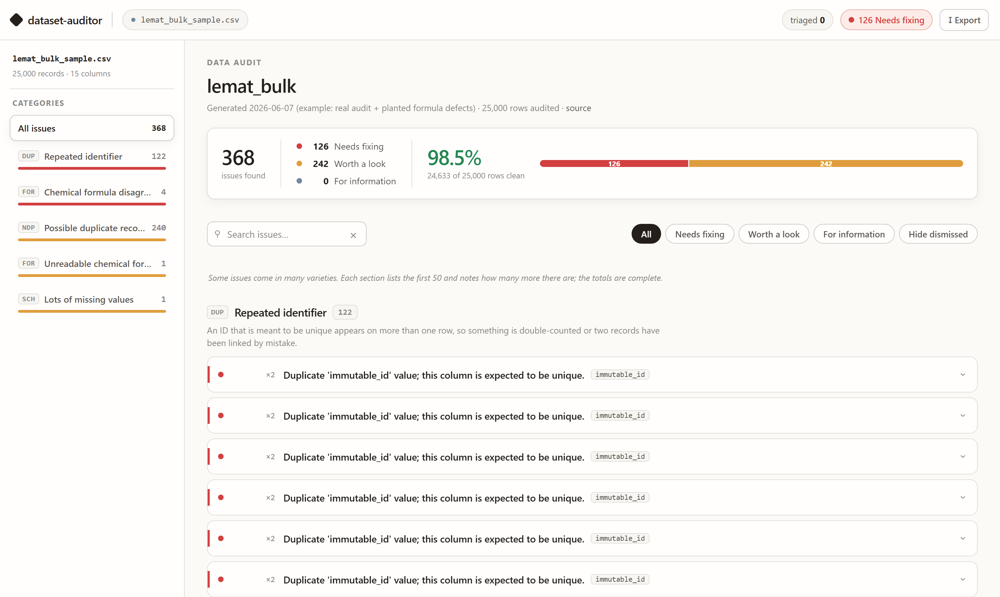
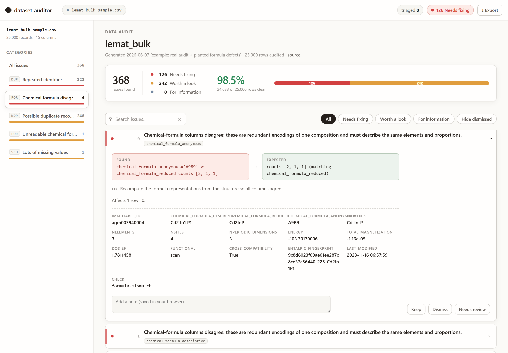

What this project is
You point the tool at a table of scientific data. It returns a single web-page report that flags likely errors: missing values, out-of-range numbers, duplicates, personal information, mislabeled categories. It runs entirely on your own machine, and is free.
What it produces
A single, self-contained HTML report: a triage dashboard that scores the dataset, groups every issue by type, and lets a human keep, dismiss, or flag each finding. Below is a real run on a 25,000-row LeMat-Bulk sample.

The arc: from a tool to a tested, published benchmark
One coherent line of work in three releases, each hardening the last: a working auditor, then a leakage-safe way to prove its one AI-powered check is trustworthy, then that proof made public and cross-vendor on Kaggle.
The high-level objectives
Find real data problems you can defend
Scientific datasets contain errors. The tool surfaces each as a concrete, checkable finding that records what it found, how serious it is, and what the value should have been.
Keep the facts separate from the AI's opinions
Everything stated as a fact comes from plain code. The AI only writes summaries and "things to check." Disable the AI and every error and warning is identical.
Work on many datasets, not just one
All the dataset-specific knowledge lives in one small description file. The checking engines never change. Onboarding a new dataset = write one description, not new code.
Only claim what can be defended
If a feature can't be shown to be sound, it doesn't ship. The AI is held to a narrow, advisory role precisely so the tool never asserts something it can't stand behind.
The single idea that makes it all work
Every check, whatever it looks for, returns the same kind of object: a
Finding. Because every check emits this one common type, the report can display any of
them without knowing what they do, and a new check is rendered with no extra reporting code.
That evidence → expected pair is what gives every finding an honest
"here's what I found, here's what it should be" read in the report.
How the pieces fit together
Facts vs. the AI: where the line is drawn
| Place | What the AI does | If you turn the AI off |
|---|---|---|
brief | Writes a plain-language briefing about the columns, from column descriptions only, never the raw data. | Briefing is skipped. Audit unchanged. |
triage | The ranking is done by code. The AI only adds a one-line summary and a "what to check" note. | The ranked list still prints, minus the notes. |
labels | The single place the AI can raise a flag itself, by judging whether a category looks wrong. Always advisory ("a human confirms"), and off by default. | One "skipped" note. Every other check runs. |
The checks
There are eight. Seven are pure code with no AI involved at all. Each one scans
the table and turns whatever it finds into Finding objects. Severity is colour-coded:
error = a contradiction or impossible value,
warn = suspicious, a human should look,
info = context.

formula check has caught three formula columns that disagree. Every finding carries FOUND → EXPECTED, a suggested fix, the full offending row, and human triage actions (keep / dismiss / needs review). The AI never decides; a person does.What each check looks for
1 · schema — missing data
Flags columns that are mostly empty.
Example (LeMat): dos_ef is ~37% empty, as that property is only computed for some materials.
2 · units — impossible / out-of-range
Flags numbers outside what's physically possible for that column.
Example (meteorites): a longitude of 354.47 when valid is −180…180; a mass of 0 g; a year of 2501 (in the future).
3 · duplicates — repeated rows & keys
Flags exact duplicate rows, and IDs that are supposed to be unique but aren't.
Example (LeMat): the same immutable_id appears 122 times, once per calculation method.
4 · near_dup — same thing, different identity
Flags rows whose content matches but whose ID differs: a probable duplicate.
Example (LeMat): 240 rows where one structure fingerprint spans several IDs (the same crystal ingested from several source databases).
5 · consistency — rows that share a key should agree
If two rows are "the same thing," their shared facts must match.
Example (LeMat): every row sharing an immutable_id must agree on its structure. (It does; this axis is genuinely clean.)
6 · pii — personal information
Scans text columns for emails, phone numbers, card numbers, and similar: always at least the rigid identifiers (email, SSN), and more when a column is declared free text. Matches are shown masked.
Use case: a "notes" column in a public dataset that accidentally contains someone's email.
7 · labels — does this category make sense?
The one check that asks the AI: is this label plausible given the row? Always advisory, off by default.
Example: an element labelled phase "solid" when it's Mercury (liquid at room temperature).
8 · formula — chemistry that must agree
A materials-only check (dormant unless switched on). Three formula columns describe the same composition, so if they disagree it's an internal contradiction.
Example: the descriptive formula says Cd2In2P2 but the reduced form claims Cd2InP: different proportions, a real ingest bug.
What it actually finds: two real datasets
These are the real counts the tool produces. The two datasets fail in different ways from identical engines.
NASA Meteorites · ~45,700 rows · 6,239 findings
Pattern: placeholder & impossible values. Thousands of records at the placeholder coordinate (0,0), a few physically impossible values, and no duplicates.
LeMat-Bulk · 25,000-row sample · 368 findings
Pattern: duplicates & missingness. The numbers are sound, so nothing is "impossible"; but the same material recurs many times, the expected signature of stitching databases together.
A note on honesty: some checks find nothing, by design
On LeMat-Bulk the range check, the consistency check and the formula check all come back clean. That's reported plainly rather than hidden. A check that correctly finds nothing is still doing its job: it's there to catch the bug the instant one appears.
The benchmark & the readiness rubric
The deterministic checks are facts, and ordinary unit tests cover them. The one component that can be wrong is the model's judgement, so we measure exactly that with a benchmark designed from the outset to be leakage-safe and hard to game, plus a rubric that aggregates the deterministic findings into a fitness-for-use score.
What the benchmark measures
The benchmark is a fixed set of cases with known answers. Each case shows the model one row and asks a single yes/no question: is this categorical value plausible for this row? Half the cases are genuine values and half are planted errors, and the score is simply how often the model's answer matches the known label. Every design choice serves one goal: a high score must require domain knowledge, not a shortcut.
- No answer-bearing context. The model receives only the element name plus neutral fields (symbol, atomic number, period); nothing that states or entails the label. An automated leakage linter fails the build if any case's sibling fields entail its answer (an earlier version prepended a context block stating the deciding rule; that channel was removed).
- Disjoint splits. Cases are partitioned into development, calibration, and a held-out test set scored only once. Tuning never touches the test split.
- Frozen and baselined. The prompt is pinned by a SHA-256 hash (any drift fails a test); every score carries a 95% confidence interval and is compared against simple baselines (rubber-stamp checkers), both at ~0.50.
- Phase at STP: is "mercury is solid" plausible? (No; it is liquid.)
- Metal / nonmetal / metalloid: is "oxygen is a metal" plausible? (No; it is a nonmetal.)
- Two independent axes of chemical knowledge, so a high aggregate score reflects reasoning across domains, not recall of a single fact type.
What a single case looks like
A case is one row plus one yes/no question. Below is a real one: the row claims helium is a solid. Helium is a gas, so this is a planted error and the stored label is implausible. This is the complete prompt the model receives, verbatim:
Column 'phase_at_stp' has value 'solid' for this row. Known valid values: solid, liquid, gas. Other fields for the same row: element=Helium symbol=He atomic_number=2 period=1 Is 'solid' a plausible value for 'phase_at_stp' given these fields and the domain context? Answer plausible=false ONLY if it clearly conflicts; treat borderline or uncertain cases as plausible=true and lower your confidence.
Note that nothing in the prompt states helium's phase. It supplies name, symbol, atomic number, and period, then asks the question. Answering correctly requires prior knowledge of the chemistry; that is the point.
- The model returns a free-text verdict, effectively
plausible: trueorplausible: false. - A deterministic parser maps it to
plausibleorimplausibleand compares it to the stored label: match = 1, mismatch = 0. - Exact match only: nothing fuzzy, subjective, or graded by another model.
On Kaggle the prompt travels verbatim, with its SHA-256 fingerprint re-checked so the test cannot silently drift. Only where it runs changes; the fresh set's answers remain server-side.
How the score works
Each model answers all 80 cases, and the score is simply how many it got right. But a high score only means something if it comes from catching the planted errors, not from calling everything fine. The contrast makes this concrete:
| Checker | Got right (of 80) | Planted errors caught (of 40) |
|---|---|---|
| A model that reasons | 80 | 40 (all of them) |
| A "rubber-stamp" check that calls every value fine | 40 | 0 (none) |
The rubber-stamp check still gets the 40 genuine values right, so it scores 50% while catching none of the 40 errors. That is why 50% is the floor to beat, and why "did it catch the errors?" matters more than the headline percentage on its own.
Every score also comes with a small ± range (a confidence interval). Eighty cases is a sample, so the range is the honest "give or take": a perfect 80 out of 80, for instance, is reported as 100% with a range reaching down to about 95%, because a few unseen cases could always go either way.
Dataset & provenance
- Unit. Each case is one chemical element presented as a data row, with a single categorical field under test (
phase_at_stp, orclassification). - Coverage. Several dozen elements spanning periods 1–7 and all three classes (metal / nonmetal / metalloid).
- Matched pairs. Each element contributes its true value (label plausible) and one planted error drawn from the same allowed vocabulary (label implausible), forcing exact 50/50 balance, so a class prior earns nothing.
- Truth. Standard periodic-table chemistry, independently re-verified by a three-perspective adversarial review (0 disputes) before the prompt was frozen.
- Splits. Disjoint development / calibration / held-out test; the held-out split is scored once.
- Size. N = 80 per domain in the held-out set.
- Open vs fresh-private. Open = the committed public test set (reproducible, possibly seen in training). Fresh-private = newly generated instances, programmatically disjoint from every published split, with the answer key server-side.
What it found, and fixed
The local model (Qwen3-4B) first scored at the 0.50 floor: it rated "helium is solid" as plausible. The cause was a strict output format that suppressed the model's reasoning step. Enabling reasoning before the verdict recovered full accuracy.
| Task | Strict format | Reasoning mode |
|---|---|---|
| phase at STP | 0.500 (floor; misses planted errors) | 1.000 (80 / 80) |
| metal / nonmetal / metalloid | 0.500 | 1.000 (80 / 80) |
Held-out test, 80 cases per domain, accuracy with a 95% confidence interval of [0.954, 1.000], Qwen3-4B. The benchmark did its job: it surfaced a real, format-induced failure mode, then verified the fix on cases the model had never seen.
--no-publish-backing-notebook exposes only the scoreboard, keeping
the cases and answers server-side. The result is a public leaderboard and a still-fair
test. The one irreversible step (publishing is one-way) is verified on a throwaway task before
anything real is made public.
The readiness rubric
Beyond enumerating defects, the rubric answers "is this dataset fit for use?" It
aggregates the deterministic findings into per-dimension scores (completeness, consistency,
plausibility, duplication, privacy) and an overall figure. Run auditor rubric, or read
the panel at the top of the report.
- A deterministic aggregation of facts: model judgements never move a score.
- A dimension whose checks did not run is marked "not assessed", never a misleading 100.
- Example scores: meteorites 94/100, LeMat-Bulk 99/100.
Threats to validity
Stated plainly, because a public benchmark should name its own limits:
Accuracy on planted binary errors is a proxy for catching organic mislabels. Planted errors are clean by construction and may be easier than messy real-world ones. Mitigation: every planted error is another valid-vocabulary value, so the model cannot succeed by format or range checks alone.
The evidence base is two chemistry domains over element-level facts that are well represented in pretraining. Results need not transfer to rarer entities or to non-chemistry categoricals. The shipped check is dataset-agnostic, but its validation is these two domains.
Among reasoning-capable models the task is near-saturated, so it does not finely rank frontier models (see the Deep-dive caveat). The open set may sit in training data; the fresh-private set mitigates this, and the fact that private tracks open is the evidence scores are not inflated.
Decoding is deterministic (temperature 0) and each model is run once, so the confidence interval reflects case-to-case variation, not seed-to-seed variance. The free-text verdict is mapped by a fixed parser whose tie-break (uncertain → plausible) matches the shipped instruction.
Where the methodology sits in the research
None of this was lifted from a paper; it was built from first principles to be defensible, and it nonetheless lands where the literature does — a sign the choices are sound rather than ad hoc. Forcing rigid output hurt reasoning, the effect measured in "Let Me Speak Freely?" (Tam et al., 2024); planting our own defects and opening a frozen test once is the standard defence against benchmark contamination; and the readiness rubric asks the same "fit for use?" question as Data Readiness Levels (Lawrence, 2017) — though it borrows the question, not a validated method. Held-out splits, trivial baselines, and confidence intervals are textbook hygiene. The project depends on none of these papers and cites none in code; where a link is only loose, it says so.
Deep dive: methodology, Kaggle Benchmarks, and what we learned
The honest, end-to-end account: the claim we set out to defend, the leakage-safe method built to defend it, how Kaggle Benchmarks actually works and how we used it, the cross-vendor result it produced, and a candid verdict on what the platform was, and wasn't, good for.
1 · The claim we set out to defend
The product flags likely-wrong scientific data. Most of its checks are deterministic: plain code, same answer every time. One check is different: an opt-in, AI-powered "label plausibility" judge that reads a categorical label (for example, the phase-at-STP recorded for an element) and says whether it looks plausible. It is advisory: it can raise a flag for a human, but it never overrides a deterministic fact.
An advisory AI check is only worth shipping if a reviewer can trust it. So a skeptic gets to ask two hard questions, and the entire evaluation layer exists to answer them:
"It's just memorising"
A frontier model has read most of the public web. A perfect score on facts it may have seen in training proves nothing about reasoning; it could be recall.
"It's an artifact"
Maybe the score is a quirk of one model, or of a leaky prompt that hints the answer, rather than a real, repeatable capability.
2 · The methodology: a leakage-safe benchmark
Both objections are answered by construction, before any model runs. Seven safeguards travel with every task:
Both objections are answered by construction, before any model runs — the same
safeguards detailed on the Benchmark & rubric tab, in brief:
a frozen prompt byte-identical to the shipped builder and pinned by hash;
exact-match scoring by plain code (no LLM grading an LLM); disjoint
dev / calibration / held-out splits, the test opened only to score; no
answer-bearing context (only a minimal {element, symbol}), enforced by an
automated leak-checker and a value↔label decorrelation guard; a 0.50 trivial-baseline
floor a model must clear with real knowledge; and honest 95% confidence ranges
on every number (80 held-out cases per domain, grown from 40 to tighten the range to [0.954, 1.000]).
Two domains carry the test: phase-at-STP plausibility (is "solid" right for this element at room conditions?) and element classification (metal / nonmetal / metalloid). The first turns out to be the sharper instrument; the second is easier (more about why below).
3 · How Kaggle Benchmarks actually works
Most people picture a Kaggle "competition": a fixed dataset, you upload predictions. Kaggle Benchmarks is the inverse: it is an author-writes-the-eval product. You write the test; Kaggle supplies the models and the compute.
llm.prompt(text,
reasoning="high") and never touch an API key or a model download.tuple[float, float] = (accuracy, 95% CI
half-width), so the leaderboard can render value ± interval.run -m anthropic/claude-haiku-4-5, -m google/gemini-3-flash, and so on.
Kaggle executes your eval on its own hardware against its own frontier-model
catalog, for free.Scoreboard public, answers hidden
Tasks are private by default; publishing is a one-way door. The flag
--no-publish-backing-notebook publishes only the scoreboard and keeps the
embedded answer key server-side, which is exactly what lets the fresh-private set stay a fair
test while still appearing on a public board.
The board is version-scoped
Every push bumps the task version, and the displayed board reflects only the latest version; earlier runs drop off. Re-pushing therefore wipes good results from view. The discipline: push once, then run the whole model set on that final version.
4 · Inside the tasks: the prompt and the cases
Two domains × {open, fresh-private} = four self-contained tasks. Each embeds the
frozen prompt plus pre-rendered cases and golden labels, so nothing of the product's source needs
shipping and the answer key never leaves Kaggle. They are auto-generated from the
benchmark by a build script (never hand-edited), which guarantees the published question is the same
one the local protocol froze: the prompt is byte-identical to the product's builder
(auditor.checks.labels.build_label_prompt) and carries its SHA
(sha256:03bab39…), so a test fails if the two ever drift apart. The exact prompt, the
matched-pair cases, and why a plain valid-values check scores only 0.50 are all on the
Benchmark & rubric tab; what is specific to Kaggle is below.
Why free text, not forced JSON
The product parses a structured LabelVerdict object. The Kaggle task makes one
deliberate adaptation: it asks for a free-text reply and parses the verdict with a small
deterministic rule (an explicit plausible=true/false wins; otherwise keywords; an
uncertain reply defaults to plausible, matching the shipped instruction). The reason is the
core finding itself: forcing a rigid JSON grammar suppresses reasoning and drops small
models to the floor. Parsing free text keeps the test faithful to the reasoning-mode
configuration that works, instead of quietly testing a harder, JSON-constrained task.
One run, one score
Each task is a single run per model (not a per-row fan-out): it scores all 80
cases concurrently and returns (accuracy, 95% CI half-width), so the leaderboard shows
one row per model with its interval. The same file, run as a script, prints the two deterministic
baselines (the 0.50 floor) without calling any model. The second domain,
element_classification, is the identical shape over the column
classification with allowed values metal / nonmetal / metalloid.
The sweep
With the tasks pushed once (the board is version-scoped), we swept Kaggle's catalog: Claude Haiku 4.5, Gemini 3 Flash, Gemini 3.1 Flash-Lite, GLM-5, and the crucial pair: Qwen3-Next-80B in both its Instruct and Thinking modes. The run was deliberately paced and gap-only to respect the free-credit limit: a single cheap probe to confirm credit, then one model at a time, filling only empty cells. Output is left uncapped, the only configuration compatible with reasoning mode (see the lessons below).
5 · The leaderboard, and what it tells us
The benchmark is published on Kaggle as four public tasks and run against Kaggle's own frontier-model catalog. Here is the full cross-model board.
--no-publish-backing-notebook).
The two domains are Phase (phase-at-STP: solid / liquid / gas) and Element (element classification: metal / nonmetal / metalloid), each scored on its open and fresh-private set. Each score is the share of 80 cases the model got right; the rubber-stamp floor is 0.50.
| Model | Phase open | Phase private | Element open | Element private |
|---|---|---|---|---|
| Claude Haiku 4.5 | 0.988 | 0.988 | 1.000 | 1.000 |
| Gemini 3 Flash | 1.000 | 0.975 | 0.975 | 0.938 |
| Gemini 3.1 Flash-Lite | 1.000 | 1.000 | 0.988 | 0.988 |
| GLM-5 | 1.000 | 1.000 | 0.975 | 0.975 |
| Qwen3-Next-80B Thinking | 1.000 | 1.000 | 1.000 | 1.000 |
| Qwen3-Next-80B Instruct | 0.513 | 0.513 | 0.675 | 0.763 |
80 cases each (give or take about 0.023 at the top). The Thinking variant scored a clean 1.000 across all four cells (both open and both private). DeepSeek V3.2 and gpt-oss-120b errored on transient provider load (429 / 503), a provider state, not a property of the benchmark. Our local Qwen3-4B (reasoning) scored 1.000 on both, our reference point.
The single clearest signal is a controlled comparison: the same 80-billion-parameter model on the same phase-open task, changing one thing: whether it is allowed to reason.
Phase-at-STP accuracy (open set, N=80)
The 0.50 trivial-baseline floor runs through the middle of the track. Four frontier models sit at the top; the same 80B model that scores 1.000 with reasoning collapses to the coin-flip floor without it.
A real top and bottom
A test everyone aces measures nothing. This one separates models: four cluster near-perfect, Qwen-Instruct cannot beat random guessing on phase. That spread is what makes a high score meaningful.
Objection 2, answered
Same model, same frozen prompt, only the reasoning toggle changes: 1.000 vs 0.513. The capability is reasoning, not a prompt artifact, and it reproduces our local Qwen3-4B result on a different model family and someone else's hardware.
Objection 1, answered
Each model's never-published private score matches its public open score (Gemini-Lite 1.00/1.00, GLM-5 1.00/1.00, Qwen-Instruct 0.51/0.51). If memorising were inflating scores, open would tower over private. It doesn't.
6 · What we learned
Reasoning, not scale or recall
- The check's reliability is a property of reasoning mode, shown across vendors, not of one model and not of memorisation.
- Difficulty is task-dependent. Phase-at-STP forces reasoning (Instruct at the 0.51 floor); element classification is more learnable from pretraining (Instruct already 0.68–0.76), so reasoning's marginal value is smaller there. The honest reading: phase is the discriminating task.
- A score that beats the 0.50 floor, survives the private set, and reproduces across vendors is genuinely hard to dismiss.
Hard-won operational lessons
- Free credit is small. Each uncapped reasoning call reserves ~$0.31–0.42; the binding limit is the per-call reservation, not parallelism. Run the most expensive model first, while credit is fullest.
- You can't cap output under
reasoning="high": it sets a large server-side thinking budget, so any cap that would shrink the reservation also breaks the reasoning models. Cap and reasoning are mutually exclusive; uncapped is the only valid config. - Transient provider errors are real (429 heavy-load, 503 unreachable) and model-specific, not benchmark flaws.
- Auth auto-refreshes on a free call; the browser login flow was a dead end in our environment.
7 · Was Kaggle Benchmarks useful? A candid verdict
- A multi-vendor frontier catalog, free. It turned the deferred "test more models" goal (otherwise gated by our single local GPU) into a live result.
- External validation. The reasoning thesis reproduced on infrastructure and model families that are not ours.
- A durable public artifact. Four leaderboards anyone can inspect and rerun.
- Our exact method travelled unchanged: frozen prompt, exact-match, baselines, leak-checker all ride inside the task.
- A free-credit ceiling that forces careful pacing; the priciest reasoning model (Qwen-Thinking) couldn't fully complete in a single day.
- A coarse quota model: an uncapped call reserves the whole context window.
- Version-scoped boards and opaque validation errors that cost iteration time until the patterns were understood.
- Some flaky catalog providers.
Plain-words glossary
Every confusing name in this project, translated. If a term shows up elsewhere in the explainer and you're not sure what it means, it's defined here.
Everyday words used in a specific way
| Term | Plain meaning |
|---|---|
| shipped / the shipped tool | The actual product people download and run — the real thing, not experiment or test code. |
| deterministic | Plain code that gives the same answer every time. No AI involved. "The facts." |
| advisory | A suggestion only. The AI's notes are advisory — a human decides, and they never change a fact. |
| flagship / proving ground | Flagship = the headline dataset (LeMat-Bulk). Proving ground = the practice dataset used to build the checks (meteorites). |
| degrade gracefully | Keep working when something is missing. Turn the AI off and the tool still runs — it just drops the AI's extras. |
| opt-in / dormant | Off unless you switch it on. The formula and labels checks are opt-in. |
Words about the AI
| Term | Plain meaning |
|---|---|
| prompt | The question (a block of text) you send to the AI. |
| prompt builder | Code that writes the prompt from the data, so it's identical every time. Example: it turns Mercury + solid into the sentence "Is 'solid' plausible for Mercury?". |
| domain context / grounding | A short paragraph of background facts about the dataset, stuck to the front of the prompt so the AI has the knowledge it needs. "Grounding" = giving the AI facts to reason from. |
| schema / output schema | The required shape of the AI's answer (e.g. "reply with true/false + one sentence"), so the code can read it reliably. |
| LLM | "Large language model" — just the AI model itself (the thing that reads the prompt and answers). |
| local / vLLM | The AI runs on your own computer (via a program called vLLM), not a paid cloud service. Nothing leaves your machine. |
| judge | Ask the AI to decide something (e.g. "is this label plausible?"). Used only in the opt-in labels check. |
Words about the code & structure
| Term | Plain meaning |
|---|---|
| Finding | One problem found, in a fixed format (what, where, how serious, what it should've been). The "common currency" every part of the tool speaks. |
| check | One detector that scans the data and produces Findings (e.g. the duplicates check). |
| severity | How serious: error (a contradiction), warn (suspicious), info (context). |
| DatasetSpec | The small description file for one dataset (which columns are numbers, the valid ranges, the unique ID). Adding a dataset = writing one of these. |
| triage | Sorting the findings into a sensible reading order (most serious first) and adding short notes. |
| key / unique key | A column whose value should appear only once (an ID). A repeat is a "duplicate key." |
| near-duplicate | Two rows whose content matches but whose ID differs — probably the same thing recorded twice. |
Words about soundness
| Term | Plain meaning |
|---|---|
| reproducible | Run it again and you get the same answer. The deterministic checks are; an AI guess often isn't. |
| data leakage | The answer sneaks into the question, so a shortcut can score well without really reasoning. A reason to throw a test out. |
| contamination | The model has already seen the test (e.g. it was scraped from the web), so a high score may just be memory. |
| unproven | "It sounds like it should work" with no experiment behind it. A hypothesis, not a result — so it doesn't ship as a feature. |